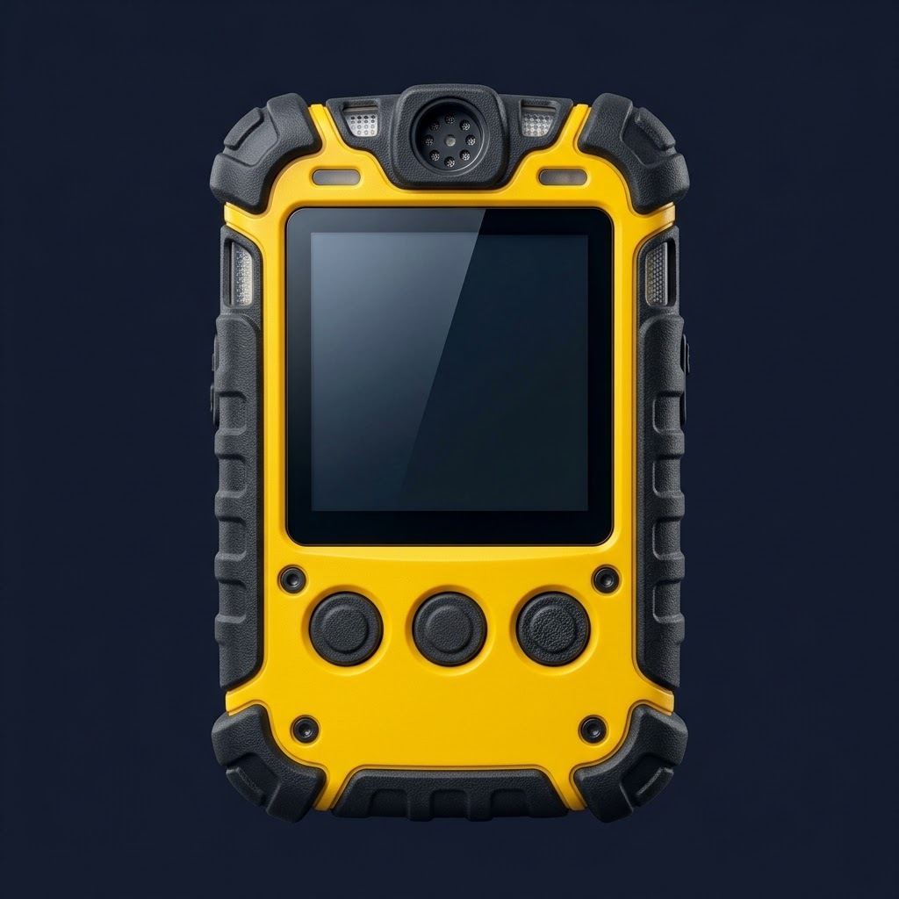
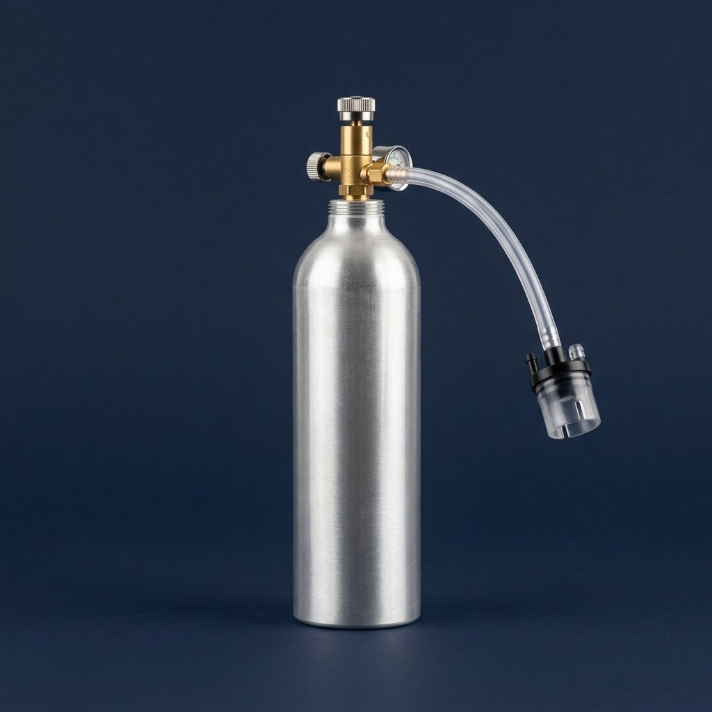

Instrument · Portable gas detector · before an enclosed-space entry
Get the gas detector ready for the entry - and decide if it can be trusted.
Press its real buttons. The highlighted line always says what to do next.


POWER
MENU · OK
NEXT
Hand the detector over